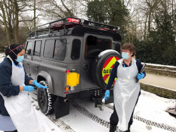
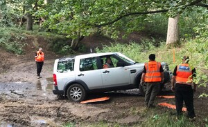
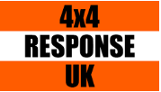

Welcome to Herts 4x4 Response Group
Herts 4x4 Response Group members are volunteers who give valuable support to the Emergency Services, Statutory and Voluntary Sectors. 
A 4-wheel drive vehicle can provide invaluable support, in times of severe weather (Snow, Flood, Other emergencies and circumstances where remote locations and/or uneven terrain is involved), and we endeavour to assist the Emergency Services, when requested.
If you require our Group for your Service, please click on Client Enquiry for more information.
 4x4 Response Volunteers use their own 4x4 vehicles and may be asked to respond in all weathers, at all times of the day or night, 365 days of the year.
Response Volunteers who do not have a 4x4, support the team through Event support, Marshalling, Publicity or Admin, etc.
Herts 4x4 Response Group is part of the national 4x4 Response UK charity.
Herts 4x4 Response Group does not respond to calls from members of the public.
If you want to help your Community, please click on Volunteer Enquiry for more information.
About 4x4 Response UK

National
4x4 Response is a national Charitable Incorporated Organization (CIO) Charity
and operates at two distinct levels.
National and Regional. Nationally, it is called 4x4 Response UK and acts as an
umbrella organisation supporting the Regional Groups. It is constituted as a
Charity with a group of Trustees, elected by its members. Regionally, each
Group is run autonomously, on a day-to-day basis (This is where the fun
happens).

Regional Groups
4x4 Responders use their own 4x4 vehicles. Relationships are built with local
‘clients’ and Local Resilience Forums to assist them, as and when required.
Regional Groups can be called upon by any Category 1 or 2 Responder (as defined
by the Civil Contingencies Act 2004) and by Voluntary and Commercial agencies,
with whom they have an agreement. Regional Groups can work directly with
‘clients’ either ‘On Standby’, ‘Call Out’ and occasionally provide mutual
support for neighbouring 4x4 Response Groups. Not all Regional Groups are
individual charities, although some have gained this status.
Thanks for taking the time to read this and for your interest in our Group.